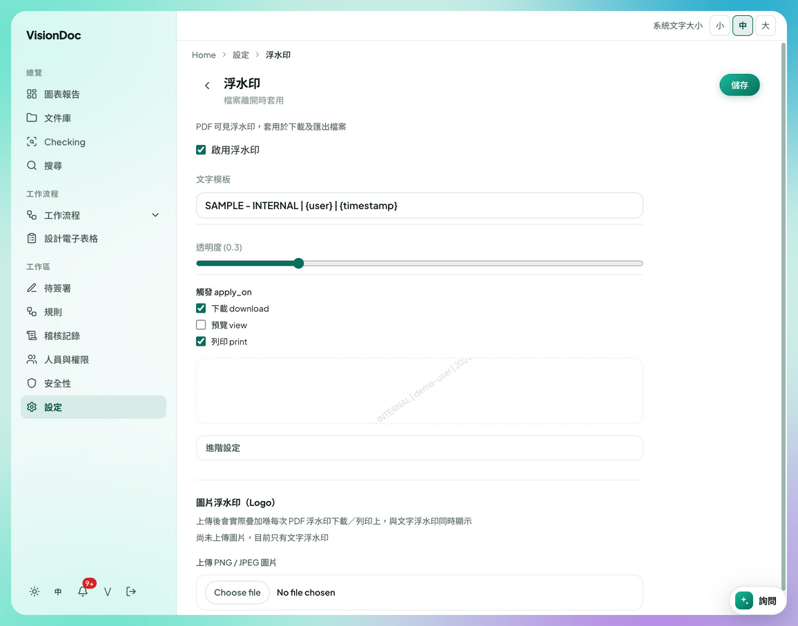
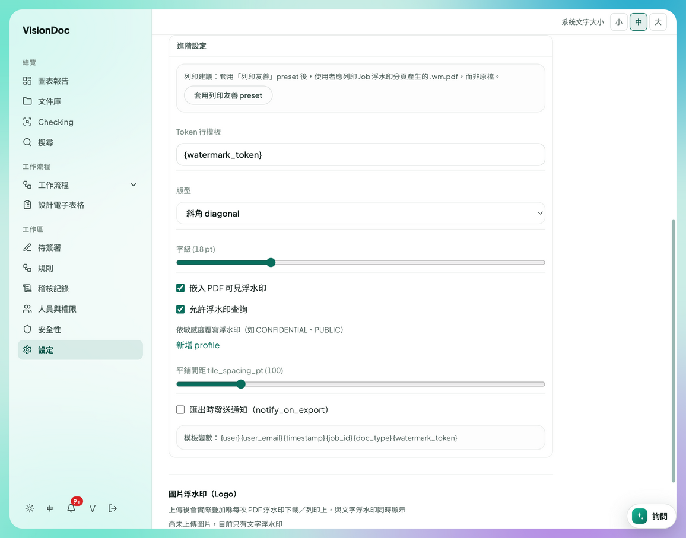
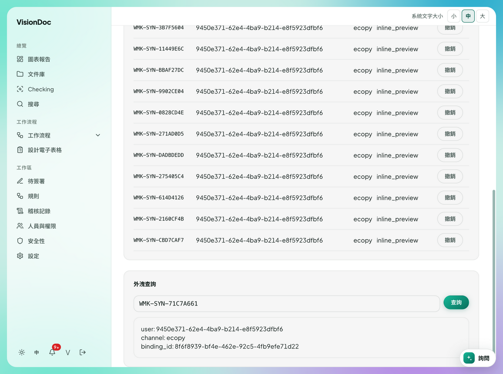

1. 先確認權限與公司
| 操作 | 所需能力 |
|---|
| 修改浮水印設定 | Edit settings／編輯設定：settings:edit |
| 上載測試文件 | 讀取及上載能力，並獲准寫入目標資料夾。 |
| 安全下載／列印 | download:secure，另須符合文件下載／列印規則。 |
| 查詢浮水印 Token | Watermark leak lookup／浮水印外洩查詢：watermark:lookup |
公司模組、使用者權限及文件權限是不同控制。請先確認登入了正確公司。
2. 打開「設定 → 浮水印」
- 記錄原設定。
- 勾選「啟用浮水印」。
- 文字模板例子：
SAMPLE - INTERNAL | {user} | {timestamp}。 - 本次選取 Download／下載及 Print／列印，保持匯出通知關閉。
- 按「儲存」，等成功訊息，再重新載入確認。

真實 Dev 設定畫面；已儲存的設定不等於各輸出路徑均已套用。
3. 進階設定
| 欄位 | 意思／本次例子 |
|---|
| 文字模板 | 固定字句及動態變數。介面列出 {user}、{user_email}、{timestamp}、{job_id}、{doc_type}、{watermark_token}；各變數是否在指定路徑套用，必須以輸出驗證。 |
| 透明度 | 控制可見程度。本次設定 0.3；不代表所有 API 都採用此值。 |
| 版型 | Diagonal／斜角、Tiled／平鋪、Footer／頁腳。 |
| 字級 | 本次設定 18 pt。 |
| Token 行模板 | {watermark_token}，用於保留輸出識別碼。 |
| 圖片浮水印／Logo | 介面另有 PNG／JPEG 上載。本次未更改或驗證 Logo。 |

不要只看設定頁示意預覽判斷完成。必須下載實際 PDF，檢查每一頁。
4. 上載與輸出
- 上載
01-original.pdf 到自己獲准使用的資料夾，等待處理完成。 - 打開文件；網址
/jobs/<job_id> 的識別碼用於 API。不要使用他人的文件 ID。 - 普通下載可供比較隱藏追蹤碼；本次可見樣本使用以下安全匯出 API。
- 保存輸出 Token，打開 PDF，逐頁核對文字完整度及可讀性。
現行文件詳情頁未顯示舊版「浮水印」分頁。本教學沒有模擬不存在的安全匯出按鈕；可見樣本是由已登入的 API 產生。
| 用途 | API（同源、已登入） |
|---|
| 斜角可見輸出 | POST /api/jobs/{job_id}/download
{"user_id":"目前登入者","channel":"ecopy"} |
| 頁腳列印輸出 | POST /api/jobs/{job_id}/print
{"user_id":"目前登入者"} |
| 取得檔案 | GET /api/jobs/{job_id}/downloads/{download_id}/file |
技術同事可參考附檔 api-example.js。它限 Dev、沿用登入會話及 CSRF 保護，不包含密碼、不修改設定、不寄出通知。替換為自己測試文件的 job ID，再執行；不要把 Cookie 或密碼放入文件。
5. 查詢識別碼
- 在同一個有權限的 Dev 公司，打開 浮水印追溯頁。
- 於「外洩查詢」貼上
WMK-SYN-71C7A661，再按「查詢」。 - 本次結果是使用者編號、
channel: ecopy 及綁定紀錄編號。
範例 Token 屬本次 QA 租戶，其他公司帳戶不能跨租戶查詢。重新產生樣本時，請用新輸出的 Token。

成功查詢的真實畫面。識別碼用於追溯紀錄，不是登入密碼。
6. 交付前檢查
- 原始內容是否保留？兩頁是否都有預期標記？
- 可見浮水印的字句、位置、字級及時間是否符合需求？
- 長帳號或時間有沒有超出頁面？
- Token 是否能在同一租戶查到正確來源？
浮水印不會移除敏感資料、不會代替 PII／角色遮蔽，也不是防截圖或防移除的保證。
本次實測紀錄與限制
| 項目 | 結果 |
|---|
| 設定儲存／重新讀取 | 成功；拍攝後已還原原值並核對一致。 |
| 原件及三份輸出 | 都是有效的兩頁 PDF，可渲染，原件文字保留。 |
| 普通下載 | 包含隱藏 Token；無可見浮水印。 |
| 安全下載／安全列印 | 分別產生斜角／頁腳可見浮水印及 Token。 |
| 自訂模板 | 設定中的 SAMPLE - INTERNAL 沒有出現在安全匯出樣本；目前不應宣稱所有樣式設定已接通。 |
| 帳號與時間 | 本次輸出使用帳號 UUID 及原始時間字串；長字串有裁切。未驗證本地時間格式套用。 |
| Token 查詢 | 成功查到 user_id、channel、binding_id。 |
| Production | 本次未測試或修改 Production。 |
這份內容可作內部教學及修正依據；對外宣稱「全部 GUI 設定已生效」前，仍需修正並重新驗證以上差異。
參考資料
這份指南與影片、PDF 樣本一併刊於 docs.visiondoc.ai。內容依據 2026-11-25 的 Dev 實測，並非 Production 功能驗證。